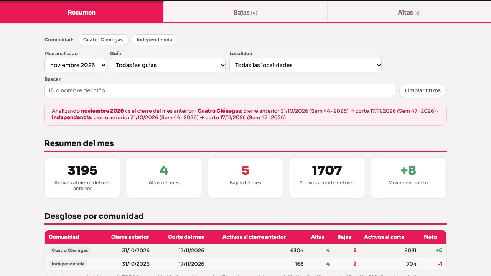
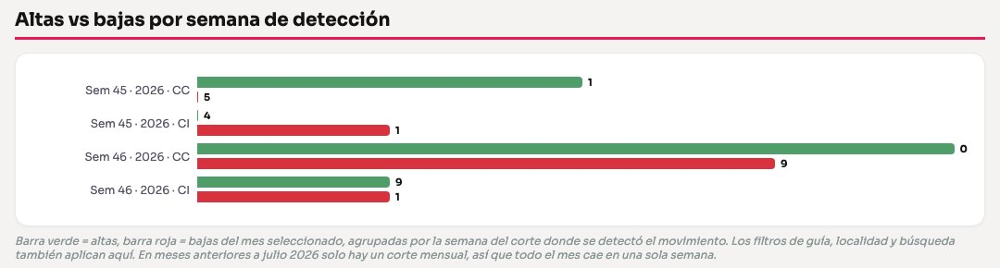

Manual de Altas y Bajas de niños P2040
Quién entró y quién salió del padrón P2040 en el mes, y por qué: cómo se cuenta cada movimiento y cómo leer los motivos.
1¿Para qué sirve?
Responde quién entró y quién salió del padrón de niños P2040 en el mes, y por qué. Compara a los niños activos al cierre del mes anterior contra los activos al último corte del mes.
Sirve para explicar por qué cambió la población de un mes a otro y para detectar bajas que hay que revisar con la guía.
2¿De dónde viene la información?
3Cómo moverte en el reporte

- Resumen · Bajas · Altas: el número entre paréntesis en Bajas y Altas dice cuántos niños hay en cada lista.
- Comunidad, Mes analizado, Guía y Localidad filtran todo el reporte; Buscar encuentra a un niño por ID o nombre. Limpiar filtros regresa a la vista completa.
- El recuadro rosa dice exactamente qué se compara: el cierre anterior y el corte del mes de cada comunidad, con su semana.
4La cuenta del mes
| Tarjeta | Qué es |
|---|---|
| Activos al cierre del mes anterior | Niños P2040 con estatus Activo en la foto del cierre del mes pasado. |
| Altas del mes | Niños activos al corte que no lo estaban al cierre anterior. |
| Bajas del mes | Niños que estaban activos al cierre anterior y ya no lo están al corte. |
| Activos al corte del mes | Niños P2040 activos en el último corte disponible del mes. |
| Movimiento neto | Altas menos bajas: si es positivo, el padrón creció. |
5Recorrido por pestañas
Da clic en una pestaña para ver qué responde y qué mirar primero.
Resumena fondo¿Cuánto cambió el padrón este mes?
- Las cinco tarjetas de la cuenta del mes y el desglose por comunidad, con el cierre anterior, el corte, las altas, las bajas y el neto de cada una.
- Altas vs bajas por semana de detección: barra verde para altas y roja para bajas, por semana y comunidad (CC o CI).

Bajas¿Quién salió y por qué?
- La lista de niños que salieron, con su semana, comunidad, edad, localidad, familia, guía y motivo. Arriba, el conteo por motivo; puedes filtrar por uno.
- El motivo viene del campo de inactividad del CRM: baja voluntaria, defunción, emigración, información errónea, mudanza, no localizado o reclasificado a F2040.
- «Desapareció del corte»: el registro ya no vino en la descarga del CRM (pudo borrarse o cambiar de ID).
- «Sin motivo capturado»: el niño está inactivo pero nadie capturó por qué.
- ⬇ Descargar Excel baja la lista con los filtros que tengas.
Altas¿Quién entró y de dónde viene?
- La lista de niños que entraron, con los mismos datos que Bajas y su origen. Arriba, el conteo por origen.
- Nuevo registro: no existía en el CRM.
- Reactivado: ya existía pero estaba inactivo (o marcado como defunción o «por registrar»).
- Reclasificado: ya existía activo con otra clasificación (F2040, C2040…) y ahora es P2040.
6Preguntas frecuentes
¿Por qué la semana no coincide con el día en que se dio de baja?
Porque el reporte ve los cambios cuando se descarga el CRM, una vez por semana. La semana es la del corte donde se detectó el cambio; la baja real pasó en los días anteriores.
¿Qué hago con una baja «Sin motivo capturado»?
Pregúntale a la guía por qué se inactivó y que capture el motivo en el CRM. En el siguiente corte ya aparecerá con su motivo.
¿Puedo compartir el Excel?
Trae datos personales de menores: úsalo solo dentro del equipo y no lo reenvíes fuera de la organización.